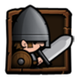
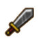
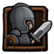
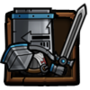
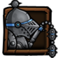

英雄数据
| 萨拉丁 |
|
|
| 因故国被毁而失去容身之地的旧贵族，对所有的神灵嗤之以鼻，常常鼓动屋大维去夺取诸神的大地统治权。 |
42073 |
5201 |
1215 |
20% |
15% |
| 英雄评价 |
| 开场触发、死亡后效果依然存在.均势局和劣势局中，buff时间和菜刀存活时间基本吻合。这是贞德所无法做到的。 贞德强在高打低，而萨拉丁则所有局同吃。 因为菜刀随着时间的推移DPS是处于一直减少的状态，大伟例外。只要减员，DPS就会降低。这就是为什么AOE一直以来克制菜刀的原因。可以让菜刀短时间内大量减员，导致大量降低DPS，AOE一方压力骤然减小。 萨拉丁则为菜刀开局DPS最大化提供BUFF，且非常稳定。迅速破路外加火龙的庇护，造成现在比较流行的弯刀双矛西德组合外加邻排苍蝇的强势打法。 |
| 推荐装备 | ||
| 战神之斧 | 龙之头盔 | 神圣之甲 |
| 龙皮靴 |

|
光辉之力项链 |
萨拉丁
| 星级 | 4星 | 称呼 | |
|---|---|---|---|
| 定位 | 辅助、近战输出 | 携带兵种 | 步兵 |
| 种族 | 人类 | 性别 | 男 |
| 获取 | 酒馆 | 类型 | 近战 |
技能信息
| 技能名称 | 技能类型 | 技能效果 |
|---|---|---|
神之护佑 |
主动技能 | 开战后立刻释放，提升自身所处位置横排所有士兵的攻击力，持续一段时间。 |
王者祝福 |
被动技能 | 英雄攻击力和防御力上升5%（+5%每级），提升等级提高效果。 |
兵种信息
| 兵种名称 | 武器 | 防具 | 生命 | 攻击 | 防御 | 幸运 | 闪避 | 移动速度 | 攻击范围 |
|---|---|---|---|---|---|---|---|---|---|
|  步兵 |
 普通 |
皮甲 |
513 | 149 | 50 | 无 | 无 | 65 | 近身 |
| 特殊技能：无 | |||||||||
|  精锐步兵 |
普通 |
皮甲 |
562 | 176 | 59 | 无 | 无 | 65 | 近身 |
| 特殊技能：无 | |||||||||
|  十字军 |
普通 |
皮甲 |
531 | 202 | 57 | 无 | 无 | 65 | 近身 |
| 特殊技能：信仰：死亡后对击杀者造成相当于十字军自身血量上限15%的额外伤害（无法闪避） | |||||||||
|  链甲兵 |
普通 |
锁甲 |
593 | 169 | 67 | 无 | 无 | 65 | 近身 |
| 特殊技能：晕击：每3次普通攻击会眩晕敌人1秒，对英雄无效。 | |||||||||
| 推荐进阶兵种：链甲兵 |
| 推荐理由：他还没出我就很看好他，这货比贞德稳定，绝对是配合菜刀的利器，更重要的是，本来他的属性平平，也不靠他输出，他唯一作用就是开个buff，所以就算只有一级10个小兵，只要技能10级都是可以上的。 |